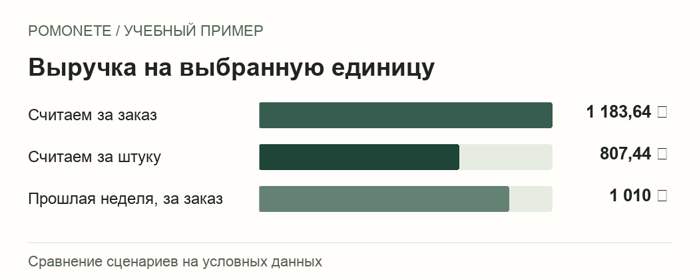

Средний чек и цена штуки в аналитике селлера Яндекс Маркета
Разбор знаменателей среднего чека и средней цены доставленной единицы на примере одного каталога.
У продавца стеллажных скоб вырос средний чек. Менеджер сделал вывод о росте цен, хотя до и после покупки одна скоба стоила одинаково. Яндекс Маркет и внутренняя аналитика могут правильно показывать разные средние. Достаточно проверить, сколько товаров оказалось в корзине и какую единицу использовал отчёт.
Собрать одну и ту же выручку
Экспортируйте выручку вместе с количеством доставленных заказов и товаров, следя за тем, чтобы фильтр одинаково включал магазины и модели работы. Из одинакового числителя можно сделать две метрики. Третью, число единиц на заказ, удобно считать рядом для объяснения динамики.
Чтобы пересобрать расчёт «Выручка на выбранную единицу» для своего магазина, перенесите в него исходные числа. В формуле A обозначает «выручка доставленных товаров, ₽», B обозначает «число заказов или товаров». Результат относится к единице, указанной в знаменателе. Общую сумму за несколько групп восстанавливают из исходных объёмов. Запишите рядом период и охват каждого среза. Для оценочных строк оставьте пояснения рядом с исходными значениями. При чтении сводки будет видно, какие из них пока подтверждены.
Выручка на выбранную единицу = A ÷ B
| Условие | Выручка доставленных товаров, ₽ | Число заказов или товаров | Выручка на выбранную единицу |
|---|---|---|---|
| Считаем за заказ | 312 480 | 264 | 1 183,64 ₽ |
| Считаем за штуку | 312 480 | 387 | 807,44 ₽ |
| Прошлая неделя, за заказ | 257 550 | 255 | 1 010 ₽ |

В сценарии «Считаем за заказ» в формулу подставляем выручка доставленных товаров, ₽ = 312 480, число заказов или товаров = 264. Получается 1 183,64 ₽. Количество заказов входит в знаменатель один раз, даже если из одного заказа доставили набор нескольких позиций.
В сценарии «Считаем за штуку» в формулу подставляем выручка доставленных товаров, ₽ = 312 480, число заказов или товаров = 387. Получается 807,44 ₽. Здесь знаменатель из доставленных единиц. Наборы учитываются согласно единице продажи в выбранном отчёте.
В сценарии «Прошлая неделя, за заказ» в формулу подставляем выручка доставленных товаров, ₽ = 257 550, число заказов или товаров = 255. Получается 1 010 ₽. Сравнение среднего чека использует тот же знаменатель и тот же источник выручки.
Если «Считаем за заказ» взять за исходную точку, «Считаем за штуку» меняет показатель «выручка на выбранную единицу» на -376,19 ₽, а «Прошлая неделя, за заказ» на -173,64 ₽. Между двумя последними строками разница составляет 202,56 ₽ при вычитании второй из третьей. Смотрите, какой именно вход изменился между строками. Если менялись объём и условия одновременно, итог сравнения относится ко всему сочетанию.
От меньшего результата до большего в таблице 376,19 ₽. При переходе из «Считаем за штуку» со значением 807,44 ₽ в «Прошлая неделя, за заказ» со значением 1 010 ₽ условия заданы явно. Этот интервал описывает три построенных случая, а для вероятности исходов нужна история. В рабочей записке полезно назвать минимальное значение, при котором сохранится ваше решение. Если такой порог попадает внутрь интервала, подтвердите спорный параметр до того, как менять процесс.
Где прячется разница в определениях
Бандл и отдельная упаковка могут одинаково отображаться в штуках в одном отчёте, хотя физически содержат разное количество предметов. Для закупки понадобится ещё собственный коэффициент единиц комплектации. Если выручка учитывается по дате доставки, количество заказов должно быть из того же среза.
В расчёт «Считаем за штуку» входят выручка доставленных товаров, ₽, число заказов или товаров. Для каждого впишите, где взять факт и с каким временным лагом он поступит. Опорой будут отчёт аналитики и история доступности предложения. Если один источник обновляется быстрее другого, зафиксируйте общий момент доступности. При существенном разрыве покажите последние данные отдельным оперативным значением.
Рядом с таблицей показов положите календарь доступности, позиций и цен. Выгрузка агрегатов удобна для первого сигнала, но день с выключенным предложением ломает сравнение. Для каждой крупной группы полезно иметь отдельные суммы числителя и знаменателя. Если у дорогой категории мало показов, сводная конверсия почти полностью повторит поведение ходовых позиций. Для разбора причины начните именно с групп, у которых заметно изменился вклад в суммарную аудиторию.
Что сильнее всего меняет результат
Возьмём сценарий «Считаем за штуку» с результатом 807,44 ₽. В нём последовательно изменим «выручка доставленных товаров, ₽», «число заказов или товаров». Для каждого входа шаг близок к 10% его исходной величины, целые значения округлены. После каждого опыта возвращаем остальные числа к исходным. Так можно выяснить, какой вход уточнять первым, если перед решением мало времени.
- «Выручка доставленных товаров, ₽» меняется с 312 480 на 343 728. При прежних остальных входах получается 888,19 ₽, сдвиг составляет 80,74 ₽.
- «Число заказов или товаров» меняется с 387 на 426. При прежних остальных входах получается 733,52 ₽, сдвиг составляет -73,92 ₽.
При выбранных шагах параметр «выручка доставленных товаров, ₽» дал самый крупный сдвиг величиной 80,74 ₽. Если в магазине эта величина меняется в узком диапазоне, подставьте обе его границы. Для связанных условий добавьте отдельную строку с одновременным изменением входов и поясните их связь в примечании.
Добавьте столбец с медианой по заказам. Если средний чек вырос из-за нескольких крупных оптовых покупок, медиана заметно сдвинется слабее. Пройдитесь по верхним пяти заказам, исключая данные покупателей из рабочих сводок, и опишите, зачем они отражены отдельно.
Как проверить причину роста
Разложите изменение чека на количество единиц и их среднюю стоимость в двух неделях. Отметьте порядок расчёта, когда менялись сразу обе причины. В карточке решения добавьте группы товаров, у которых выросло число единиц в заказе. Прежде чем увеличивать бюджет, проверьте, достаточно ли для них упаковки и товарных остатков.
Снимайте второй срез на тех же условиях. Если изменились источники или доли предложений, добавьте таблицу с фиксированным составом товаров и отметьте, какую долю исходной выборки она охватывает. Один расчёт покажет, что произошло у магазина в целом. Расчёт с фиксированным составом покажет изменение у сравнимых позиций. Заказы закрываются со временем, поэтому суммы по завершённым продажам дополните датой проверки.
Для управленческой встречи подготовьте два небольших примера из рабочих записей. Первый сверяет «выручка на выбранную единицу» при базовых условиях «Считаем за заказ». Второй берёт изменившуюся строку и объясняет, какой источник исправлен. Селлеру Яндекс Маркета будет проще повторить расчёт на новой группе, если видны исходные значения, дата анализа и момент, когда итог станет достаточно точным для решения.